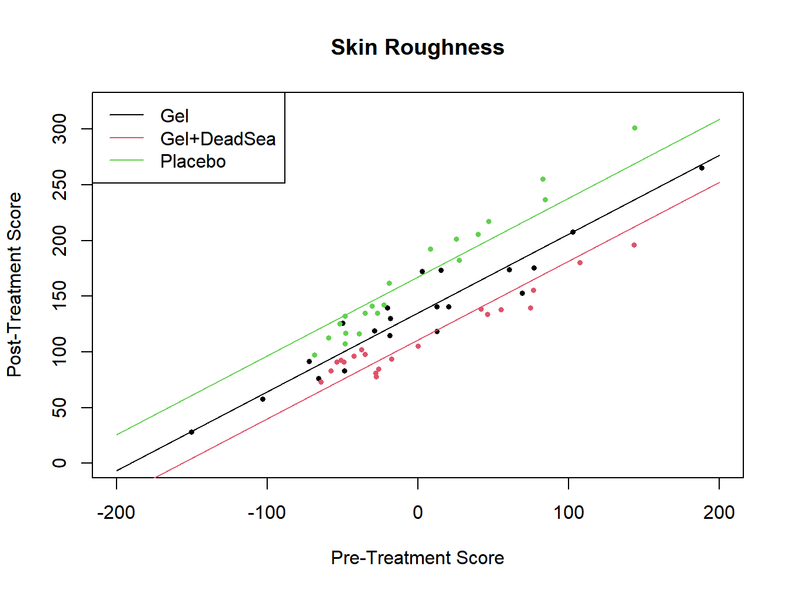
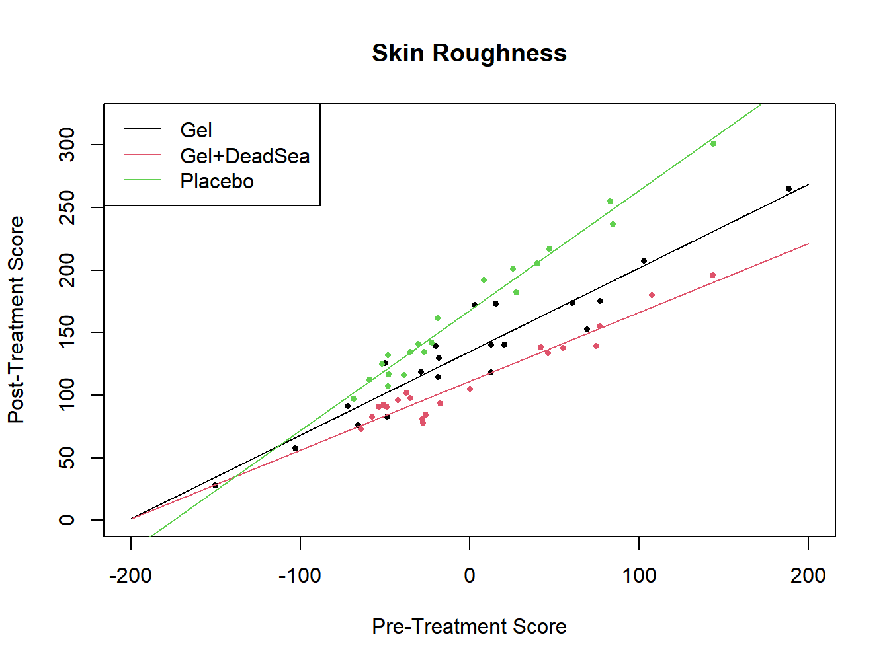

Chapter 13 Analysis of Covariance (ANCOVA)
In various cases, researchers are interested in comparing treatments after adjusting for a numeric predictor that is associated with an experimental unit. That is often, but not necessarily, a baseline pre-treatment score on the unit. The goal is to determine whether treatment effects are present after controlling for the covariate.
When the Analysis of Covariance was first developed, the computations used were very complicated. Now, it’s just as simple as fitting a regression with one or more predictors and dummy variables for the treatment conditions. Models can have one or more factors. We will consider the case with one treatment factor and one covariate.
13.1 Additive Model
In the additive model, the slope relating the covariate to the response is assumed to be the same for each treatment. As with the 1-Way ANOVA model, we will use \(r\) as the number of treatments with \(n_i\) replicates for treatment \(i\). We will use centered \(X\) values for the covariate for ease of interpretation when describing adjusted means. We will also include \(r-1\) indicators for treatments \(1,\ldots,r-1\) assuming again that treatment effects sum to 0.
\[ Y_{ij}= \mu_{\bullet} + \tau_1 I_{ij1} + \cdots + \tau_{r-1}I_{ij,r-1} + \gamma \left(X_{ij}-\overline{X}_{\bullet\bullet}\right) +\epsilon_{ijk} \]
\[ \epsilon_{ijk} \sim NID\left(0,\sigma^2\right) \qquad \sum_{i=1}^r\tau_i=0 \quad \Rightarrow \quad \tau_r=-\sum_{i=1}^{r-1}\tau_i \] \[ I_{ij1} = \left\{ \begin{array}{r@{\quad:\quad}l} 1 & i=1 \\ 0 & i=2,\ldots,r-1 \\ -1 & i=r\\ \end{array} \right. \qquad \cdots \qquad I_{ij,r-1} = \left\{ \begin{array}{r@{\quad:\quad}l} 1 & i=r-1 \\ 0 & i=1,\ldots,r-2 \\ -1 & i=r\\ \end{array} \right. \]
To test for treatment effects, controlling for the covariate, we test \(H_0:\tau_1=\cdots = \tau_r=0\). This is easily conducted as a general linear test, where the full model contains the \(r-1\) treatment indicator variables and the centered covariate. The reduced model contains only the centered covariate. The test is as follows.
\[ TS: F^*=\frac{\left[\frac{SSE(R)-SSE(C)}{df_R-df_C}\right]}{ \left[\frac{SSE(C)}{df_C}\right] } \qquad RR:F^* \geq F_{1-\alpha;df_R-df_F,df_F} \] Note that for the current case, \(df_R=n_T-2\) and \(df_F=n_T-2-(r-1)=n_T-4\).
Example 12.1 - Comparison of Skin Softeners
A study compared two treatments and a control \((r=3)\) for skin softening (Ma’Or, Yehuda, and Voss 1997). The active treatments were as follows, and the covariate was the pre-treatment softness score for the subjects. There were 20 subjects per treatment, so \(n_T=3(20)=60\). The response is skin roughness (lower scores are better).
- Treatment 1 - Gel Formulation
- Treatment 2 - Gel Formulation + 1% Dead Sea Concentrate
- Treatment 3 - Placebo
The R code and output are given below.
## trt_Grp pre_x post_y gel gelDS
## 1 1 121.10 76.30 1 0
## 2 1 375.40 265.10 1 0
## 3 1 138.05 82.92 1 0## trt_Grp pre_x post_y gel gelDS
## 58 3 138.39 132.16 0 0
## 59 3 138.59 107.22 0 0
## 60 3 134.89 125.20 0 0dsm$I1 <- ifelse(dsm$trt_Grp==1,1,ifelse(dsm$trt_Grp==3,-1,0))
dsm$I2 <- ifelse(dsm$trt_Grp==2,1,ifelse(dsm$trt_Grp==3,-1,0))
dsm$Xc <- dsm$pre_x - mean(dsm$pre_x)
dsm.mod1 <- lm(post_y ~ I1 + I2 + Xc, data=dsm)
summary(dsm.mod1)##
## Call:
## lm(formula = post_y ~ I1 + I2 + Xc, data = dsm)
##
## Residuals:
## Min 1Q Median 3Q Max
## -31.13 -10.35 -3.93 12.29 35.34
##
## Coefficients:
## Estimate Std. Error t value Pr(>|t|)
## (Intercept) 137.53667 2.08924 65.831 < 2e-16 ***
## I1 -2.66382 2.95473 -0.902 0.371
## I2 -26.91735 2.95595 -9.106 1.22e-12 ***
## Xc 0.70732 0.03257 21.716 < 2e-16 ***
## ---
## Signif. codes: 0 '***' 0.001 '**' 0.01 '*' 0.05 '.' 0.1 ' ' 1
##
## Residual standard error: 16.18 on 56 degrees of freedom
## Multiple R-squared: 0.9121, Adjusted R-squared: 0.9073
## F-statistic: 193.6 on 3 and 56 DF, p-value: < 2.2e-16## Analysis of Variance Table
##
## Response: post_y
## Df Sum Sq Mean Sq F value Pr(>F)
## I1 1 9853 9853 37.622 9.205e-08 ***
## I2 1 18744 18744 71.572 1.361e-11 ***
## Xc 1 123501 123501 471.566 < 2.2e-16 ***
## Residuals 56 14666 262
## ---
## Signif. codes: 0 '***' 0.001 '**' 0.01 '*' 0.05 '.' 0.1 ' ' 1##
## Call:
## lm(formula = post_y ~ Xc, data = dsm)
##
## Residuals:
## Min 1Q Median 3Q Max
## -50.220 -19.668 -4.885 21.923 63.420
##
## Coefficients:
## Estimate Std. Error t value Pr(>|t|)
## (Intercept) 137.53667 3.66612 37.52 <2e-16 ***
## Xc 0.69686 0.05713 12.20 <2e-16 ***
## ---
## Signif. codes: 0 '***' 0.001 '**' 0.01 '*' 0.05 '.' 0.1 ' ' 1
##
## Residual standard error: 28.4 on 58 degrees of freedom
## Multiple R-squared: 0.7195, Adjusted R-squared: 0.7147
## F-statistic: 148.8 on 1 and 58 DF, p-value: < 2.2e-16## Analysis of Variance Table
##
## Response: post_y
## Df Sum Sq Mean Sq F value Pr(>F)
## Xc 1 119991 119991 148.79 < 2.2e-16 ***
## Residuals 58 46773 806
## ---
## Signif. codes: 0 '***' 0.001 '**' 0.01 '*' 0.05 '.' 0.1 ' ' 1## Analysis of Variance Table
##
## Model 1: post_y ~ Xc
## Model 2: post_y ~ I1 + I2 + Xc
## Res.Df RSS Df Sum of Sq F Pr(>F)
## 1 58 46773
## 2 56 14666 2 32107 61.297 7.888e-15 ***
## ---
## Signif. codes: 0 '***' 0.001 '**' 0.01 '*' 0.05 '.' 0.1 ' ' 1## Min. 1st Qu. Median Mean 3rd Qu. Max.
## -150.41 -48.35 -19.85 0.00 42.88 188.51Xc.grid <- seq(-200,200,0.1)
plot(dsm$post_y ~ dsm$Xc, pch=16, col=dsm$trt_Grp, cex=0.6,
xlab="Pre-Treatment Score", ylab="Post-Treatment Score",
xlim=c(-200,200), ylim=c(0,320), main="Skin Roughness")
lines(Xc.grid,
dsm.mod1$coef[1]+dsm.mod1$coef[2]+Xc.grid*dsm.mod1$coef[4],
col=1)
lines(Xc.grid,
dsm.mod1$coef[1]+dsm.mod1$coef[3]+Xc.grid*dsm.mod1$coef[4],
col=2)
lines(Xc.grid,
dsm.mod1$coef[1]-dsm.mod1$coef[2]-dsm.mod1$coef[3]+Xc.grid*dsm.mod1$coef[4],
col=3)
legend("topleft", c("Gel", "Gel+DeadSea","Placebo"), col=1:3, lty=1)
Figure 13.1: Analysis of Covariance for skin softener study - Additive Model
The \(F^*\)-statistic is 61.297 with 2 and 56 degrees of freedom and \(P<.0001\). There is strong evidence of differences among the treatments, controlling for baseline score.
\[\nabla \]
13.1.1 Adjusted means
Where the lines cross at the centered X level of 0 are the adjusted means. That is, they are the predicted scores for the treatments at the “average” value of the uncentered covariate. Based on this additive model, we obtain the following adjusted means.
\[ i=1,\ldots , r-1:\quad \hat{\mu}_i = \hat{\mu}_{\bullet} +\hat{\tau}_i \qquad \hat{\mu}_r=\hat{\mu}_{\bullet} -\sum_{i=1}^{r-1}\hat{\tau}_i \]
The goal is to typically compare the adjusted means, as would be done for the 1-Way ANOVA. The standard errors depend on the variance-covariance matrix of the regression coefficients, which is obtained with the vcov function from the regression model fit. The variance-covariance matrix for this example is given below.
\[ \begin{bmatrix} \hat{V}\left\{\hat{\mu}_{\bullet}\right\} & \hat{\mbox{COV}}\left\{\hat{\mu}_{\bullet},\hat{\tau}_1\right\} & \hat{\mbox{COV}}\left\{\hat{\mu}_{\bullet},\hat{\tau}_2\right\} & \hat{\mbox{COV}}\left\{\hat{\mu}_{\bullet},\hat{\gamma}\right\} \\ \hat{\mbox{COV}}\left\{\hat{\mu}_{\bullet},\hat{\tau}_1\right\} & \hat{V}\left\{\hat{\tau}_1\right\} & \hat{\mbox{COV}}\left\{\hat{\tau}_1,\hat{\tau}_2\right\} & \hat{\mbox{COV}}\left\{\hat{\tau}_1,\hat{\gamma}\right\} \\ \hat{\mbox{COV}}\left\{\hat{\mu}_{\bullet},\hat{\tau}_2\right\} & \hat{\mbox{COV}}\left\{\hat{\tau}_1,\hat{\tau}_2\right\} & \hat{V}\left\{\hat{\tau}_2\right\} & \hat{\mbox{COV}}\left\{\hat{\tau}_2,\hat{\gamma}\right\} \\ \hat{\mbox{COV}}\left\{\hat{\mu}_{\bullet},\hat{\gamma}\right\} & \hat{\mbox{COV}}\left\{\hat{\tau}_1,\hat{\gamma}\right\} & \hat{\mbox{COV}}\left\{\hat{\tau}_2,\hat{\gamma}\right\} & \hat{V}\left\{\hat{\gamma}\right\} \end{bmatrix} \]
\[ i,i' < r \quad \hat{SE}\left\{\hat{\tau}_i-\hat{\tau}_{i'}\right\} = \sqrt{\hat{V}\left\{\hat{\tau}_i\right\}+\hat{V}\left\{\hat{\tau}_{i'}\right\} -2\hat{\mbox{COV}}\left\{\hat{\tau}_i,\hat{\tau}_{i'}\right\}} \]
When comparing the first \(r-1\) treatments with the \(r^{th}\), we use the following result.
\[ \hat{\tau}_i-\hat{\tau}_r=\hat{\tau}_i-\left(-\sum_{i=1}^{r-1}\hat{\tau}_i\right)= 2\hat{\tau}_i + \sum_{\stackrel{i'=1}{i'\ne i}}^{r-1}\hat{\tau}_{i'} \]
Then the (messy) standard errors for these differences are as follow.
\[ \hat{SE}\left\{\hat{\tau}_i-\hat{\tau}_r\right\} = \sqrt{4\hat{V}\left\{\hat{\tau}_i\right\} + \sum_{\stackrel{i'=1}{i'\ne i}}^{r-1}\hat{V}\left\{\hat{\tau}_{i'}\right\} +4\sum_{\stackrel{i'=1}{i'\ne i}}^{r-1}\hat{\mbox{COV}}\left\{\hat{\tau}_i,\hat{\tau}_{i'}\right\} +2\sum_{\stackrel{i'=1}{i'\ne i}}^{r-2}\sum_{\stackrel{i''=i'+1}{i''\ne i}}^{r-1} \hat{\mbox{COV}}\left\{\hat{\tau}_{i'},\hat{\tau}_{i''}\right\} } \] Here, we consider a few cases to observe these variance calculations. When \(r=2\), we have the following simple case.
\[ \hat{\tau}_2 = -\hat{\tau}_1 \quad \Rightarrow \quad \hat{\tau}_1-\hat{\tau}_2= 2\hat{\tau}_1 \quad \Rightarrow \quad \hat{V}\left\{\hat{\tau}_1-\hat{\tau}_2\right\} =4\hat{V}\left\{\hat{\tau}_1\right\} \] When \(r=3\), as in the skin softener study, we have the following results.
\[ \hat{\tau}_3 = -\hat{\tau}_1-\hat{\tau}_2 \quad \Rightarrow \quad \hat{\tau}_1-\hat{\tau}_3 = \hat{\tau}_1-\left[\hat{\tau}_1-\hat{\tau}_2\right]= 2\hat{\tau}_1+\hat{\tau}_2 \] \[\quad \Rightarrow \quad \hat{V}\left\{\hat{\tau}_1-\hat{\tau}_3\right\}= 4\hat{V}\left\{\hat{\tau}_1\right\}+\hat{V}\left\{\hat{\tau}_2\right\}+ 4\hat{\mbox{COV}}\left\{\hat{\tau}_1,\hat{\tau}_2\right\} \] Finally, when \(r=4\), have the following results. \[ \hat{\tau}_1-\hat{\tau}_4 = \hat{\tau}_1-\left[\hat{\tau}_1-\hat{\tau}_2-\hat{\tau}_3\right]= 2\hat{\tau}_1+\hat{\tau}_2+\hat{\tau}_3 \quad \Rightarrow \quad \] \[ \hat{V}\left\{\hat{\tau}_1-\hat{\tau}_4\right\}= 4\hat{V}\left\{\hat{\tau}_1\right\}+\hat{V}\left\{\hat{\tau}_2\right\}+ \hat{V}\left\{\hat{\tau}_3\right\}+ 4\hat{\mbox{COV}}\left\{\hat{\tau}_1,\hat{\tau}_2\right\}+ 4\hat{\mbox{COV}}\left\{\hat{\tau}_1,\hat{\tau}_3\right\}+ 2\hat{\mbox{COV}}\left\{\hat{\tau}_2,\hat{\tau}_3\right\} \]
Example 12.2 - Comparison of Skin Softeners
We obtain the adjusted means and their differences along with multiple comparisons with the following R code.
## trt_Grp pre_x post_y gel gelDS
## 1 1 121.1 76.3 1 0
## 2 1 375.4 265.1 1 0## trt_Grp pre_x post_y gel gelDS
## 59 3 138.59 107.22 0 0
## 60 3 134.89 125.20 0 0dsm$I1 <- ifelse(dsm$trt_Grp==1,1,ifelse(dsm$trt_Grp==3,-1,0))
dsm$I2 <- ifelse(dsm$trt_Grp==2,1,ifelse(dsm$trt_Grp==3,-1,0))
dsm$Xc <- dsm$pre_x - mean(dsm$pre_x)
dsm.mod1 <- lm(post_y ~ I1 + I2 + Xc, data=dsm)
summary(dsm.mod1)##
## Call:
## lm(formula = post_y ~ I1 + I2 + Xc, data = dsm)
##
## Residuals:
## Min 1Q Median 3Q Max
## -31.13 -10.35 -3.93 12.29 35.34
##
## Coefficients:
## Estimate Std. Error t value Pr(>|t|)
## (Intercept) 137.53667 2.08924 65.831 < 2e-16 ***
## I1 -2.66382 2.95473 -0.902 0.371
## I2 -26.91735 2.95595 -9.106 1.22e-12 ***
## Xc 0.70732 0.03257 21.716 < 2e-16 ***
## ---
## Signif. codes: 0 '***' 0.001 '**' 0.01 '*' 0.05 '.' 0.1 ' ' 1
##
## Residual standard error: 16.18 on 56 degrees of freedom
## Multiple R-squared: 0.9121, Adjusted R-squared: 0.9073
## F-statistic: 193.6 on 3 and 56 DF, p-value: < 2.2e-16## Analysis of Variance Table
##
## Response: post_y
## Df Sum Sq Mean Sq F value Pr(>F)
## I1 1 9853 9853 37.622 9.205e-08 ***
## I2 1 18744 18744 71.572 1.361e-11 ***
## Xc 1 123501 123501 471.566 < 2.2e-16 ***
## Residuals 56 14666 262
## ---
## Signif. codes: 0 '***' 0.001 '**' 0.01 '*' 0.05 '.' 0.1 ' ' 1vcov1 <- vcov(dsm.mod1)
r <- length(unique(dsm$trt_Grp))
adjmean <- rep(0,r)
for (i1 in 1:(r-1)) adjmean[i1] <- dsm.mod1$coef[1] + dsm.mod1$coef[i1+1]
adjmean[r] <- dsm.mod1$coef[1]-sum(dsm.mod1$coef[2:r])
adjmean## [1] 134.8728 110.6193 167.1178se.diff <- rep(0,r*(r-1)/2)
se.diff[1] <- sqrt(vcov1[2,2]+vcov1[3,3]-2*vcov1[2,3])
se.diff[2] <- sqrt(4*vcov1[2,2]+vcov1[3,3]+4*vcov1[2,3])
se.diff[3] <- sqrt(4*vcov1[3,3]+vcov1[2,2]+4*vcov1[2,3])
HSD.q <- qtukey(.95,r,df.residual(dsm.mod1))
HSD.out <- matrix(rep(0,10*r*(r-1)/2), ncol=10)
row.count <- 0
for (i1 in 2:r) {
for (i2 in 1:(i1-1)) {
row.count <- row.count + 1
HSD.out[row.count,1] <- i1
HSD.out[row.count,2] <- i2
HSD.out[row.count,3] <- adjmean[i1]
HSD.out[row.count,4] <- adjmean[i2]
HSD.out[row.count,5] <- adjmean[i1] - adjmean[i2]
HSD.out[row.count,6] <- se.diff[row.count]
HSD.out[row.count,7] <- HSD.q*se.diff[row.count]
HSD.out[row.count,8] <-
(adjmean[i1] - adjmean[i2]) - HSD.q*se.diff[row.count]
HSD.out[row.count,9] <-
(adjmean[i1] - adjmean[i2]) + HSD.q*se.diff[row.count]
HSD.out[row.count,10] <-
1-ptukey(sqrt(2)*abs(adjmean[i1] - adjmean[i2])/se.diff[row.count],
r,df.residual(dsm.mod1))
}
}
colnames(HSD.out) <- c("i", "i'", "AdjMn_i", "AdjMn_i'", "Diff", "Std Err",
"HSD", "LB", "UB", "p adj")
round(HSD.out,4)## i i' AdjMn_i AdjMn_i' Diff Std Err HSD LB UB p adj
## [1,] 2 1 110.6193 134.8728 -24.2535 5.1188 17.4286 -41.6821 -6.8250 0
## [2,] 3 1 167.1178 134.8728 32.2450 5.1177 17.4248 14.8202 49.6698 0
## [3,] 3 2 167.1178 110.6193 56.4985 5.1198 17.4320 39.0665 73.9306 0All three pairs of treatments are significantly different. Treatment 2 (Gel+DeadSea) has significantly lower roughness scores than the other treatments and Gel has significantly lower scores than Placebo.
Here we use the factor variable for treatment and the emmeans package to obtain and compare the adjusted means.
## trt_Grp pre_x post_y gel gelDS
## 1 1 121.1 76.3 1 0
## 2 1 375.4 265.1 1 0dsm$trt_Grp.f <- factor(dsm$trt_Grp, levels=1:3,labels=c("gel","gelDS", "control"))
options(contrasts=c("contr.sum", "contr.poly"))
dsm.mod.add <- aov(post_y ~ pre_x + trt_Grp.f, data=dsm)
summary.lm(dsm.mod.add)##
## Call:
## aov(formula = post_y ~ pre_x + trt_Grp.f, data = dsm)
##
## Residuals:
## Min 1Q Median 3Q Max
## -31.13 -10.35 -3.93 12.29 35.34
##
## Coefficients:
## Estimate Std. Error t value Pr(>|t|)
## (Intercept) 5.34449 6.43598 0.830 0.410
## pre_x 0.70732 0.03257 21.716 < 2e-16 ***
## trt_Grp.f1 -2.66382 2.95473 -0.902 0.371
## trt_Grp.f2 -26.91735 2.95595 -9.106 1.22e-12 ***
## ---
## Signif. codes: 0 '***' 0.001 '**' 0.01 '*' 0.05 '.' 0.1 ' ' 1
##
## Residual standard error: 16.18 on 56 degrees of freedom
## Multiple R-squared: 0.9121, Adjusted R-squared: 0.9073
## F-statistic: 193.6 on 3 and 56 DF, p-value: < 2.2e-16## Analysis of Variance Table
##
## Response: post_y
## Df Sum Sq Mean Sq F value Pr(>F)
## pre_x 1 119991 119991 458.166 < 2.2e-16 ***
## trt_Grp.f 2 32107 16053 61.297 7.888e-15 ***
## Residuals 56 14666 262
## ---
## Signif. codes: 0 '***' 0.001 '**' 0.01 '*' 0.05 '.' 0.1 ' ' 1## trt_Grp.f emmean SE df lower.CL upper.CL
## gel 135 3.62 56 128 142
## gelDS 111 3.62 56 103 118
## control 167 3.62 56 160 174
##
## Confidence level used: 0.95## contrast estimate SE df t.ratio p.value
## gel - gelDS 24.3 5.12 56 4.738 <0.0001
## gel - control -32.2 5.12 56 -6.301 <0.0001
## gelDS - control -56.5 5.12 56 -11.035 <0.0001
##
## P value adjustment: tukey method for comparing a family of 3 estimates\[\nabla \]
13.2 Interaction Model
When the slope relating the response to the covariate differs among treatments, the model contains interactions. This can be tested by including cross-product terms for the treatment indicator variables and the centered covariate. Then the full model containing these extra terms can be compared with the additive (reduced) model. The interaction model is given below.
\[ Y_{ij}= \mu_{\bullet} + \sum_{k=1}^{r-1}\tau_k I_{ijk} + \gamma \left(X_{ij}-\overline{X}_{\bullet\bullet}\right) + \sum_{k=1}^{r-1}\beta_kI_{ijk}\left(X_{ij}-\overline{X}_{\bullet\bullet}\right) + \epsilon_{ijk} \]
Comparing adjusted means is more difficult when there is an interaction, as the difference among treatment means differs at different \(X\) levels (unlike the additive model). A method was developed by Johnson and Neyman to find regions of \(X\) values where two treatments are significantly different and where they are not. We will not pursue that method here, but will run the general linear test for interactions.
Example 12.3 - Comparison of Skin Softeners
We obtain the adjusted means and their differences along with multiple comparisons with the following R code.
## trt_Grp pre_x post_y gel gelDS
## 1 1 121.1 76.3 1 0
## 2 1 375.4 265.1 1 0## trt_Grp pre_x post_y gel gelDS
## 59 3 138.59 107.22 0 0
## 60 3 134.89 125.20 0 0##
## Call:
## lm(formula = post_y ~ I1 + I2 + Xc, data = dsm)
##
## Residuals:
## Min 1Q Median 3Q Max
## -31.13 -10.35 -3.93 12.29 35.34
##
## Coefficients:
## Estimate Std. Error t value Pr(>|t|)
## (Intercept) 137.53667 2.08924 65.831 < 2e-16 ***
## I1 -2.66382 2.95473 -0.902 0.371
## I2 -26.91735 2.95595 -9.106 1.22e-12 ***
## Xc 0.70732 0.03257 21.716 < 2e-16 ***
## ---
## Signif. codes: 0 '***' 0.001 '**' 0.01 '*' 0.05 '.' 0.1 ' ' 1
##
## Residual standard error: 16.18 on 56 degrees of freedom
## Multiple R-squared: 0.9121, Adjusted R-squared: 0.9073
## F-statistic: 193.6 on 3 and 56 DF, p-value: < 2.2e-16## Analysis of Variance Table
##
## Response: post_y
## Df Sum Sq Mean Sq F value Pr(>F)
## I1 1 9853 9853 37.622 9.205e-08 ***
## I2 1 18744 18744 71.572 1.361e-11 ***
## Xc 1 123501 123501 471.566 < 2.2e-16 ***
## Residuals 56 14666 262
## ---
## Signif. codes: 0 '***' 0.001 '**' 0.01 '*' 0.05 '.' 0.1 ' ' 1##
## Call:
## lm(formula = post_y ~ I1 + I2 + Xc + I(I1 * Xc) + I(I2 * Xc),
## data = dsm)
##
## Residuals:
## Min 1Q Median 3Q Max
## -28.385 -7.771 0.046 7.394 35.485
##
## Coefficients:
## Estimate Std. Error t value Pr(>|t|)
## (Intercept) 137.83352 1.64131 83.978 < 2e-16 ***
## I1 -2.99032 2.32058 -1.289 0.2030
## I2 -26.78674 2.32170 -11.538 3.41e-16 ***
## Xc 0.72542 0.02632 27.564 < 2e-16 ***
## I(I1 * Xc) -0.05744 0.03431 -1.674 0.0999 .
## I(I2 * Xc) -0.17549 0.03784 -4.638 2.28e-05 ***
## ---
## Signif. codes: 0 '***' 0.001 '**' 0.01 '*' 0.05 '.' 0.1 ' ' 1
##
## Residual standard error: 12.71 on 54 degrees of freedom
## Multiple R-squared: 0.9477, Adjusted R-squared: 0.9429
## F-statistic: 195.8 on 5 and 54 DF, p-value: < 2.2e-16## Analysis of Variance Table
##
## Response: post_y
## Df Sum Sq Mean Sq F value Pr(>F)
## I1 1 9853 9853 61.026 1.985e-10 ***
## I2 1 18744 18744 116.096 4.560e-15 ***
## Xc 1 123501 123501 764.925 < 2.2e-16 ***
## I(I1 * Xc) 1 2475 2475 15.330 0.0002553 ***
## I(I2 * Xc) 1 3472 3472 21.507 2.279e-05 ***
## Residuals 54 8719 161
## ---
## Signif. codes: 0 '***' 0.001 '**' 0.01 '*' 0.05 '.' 0.1 ' ' 1## Analysis of Variance Table
##
## Model 1: post_y ~ I1 + I2 + Xc
## Model 2: post_y ~ I1 + I2 + Xc + I(I1 * Xc) + I(I2 * Xc)
## Res.Df RSS Df Sum of Sq F Pr(>F)
## 1 56 14666.1
## 2 54 8718.5 2 5947.5 18.419 7.971e-07 ***
## ---
## Signif. codes: 0 '***' 0.001 '**' 0.01 '*' 0.05 '.' 0.1 ' ' 1
Figure 13.2: Analysis of Covariance for skin softener study - Interaction Model
The interaction is significant \((F^*=18.42, P<.0001)\). Based on the plot, there appears to be larger treatment differences among patients with higher baseline skin roughness.
\[\nabla \]
## Warning: package 'rsm' was built under R version 4.5.3## Warning: package 'mixexp' was built under R version 4.5.3## Loading required package: lattice## Loading required package: grid## Loading required package: daewr## Warning: package 'daewr' was built under R version 4.5.3